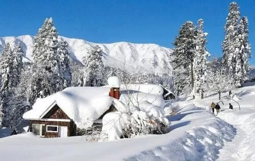
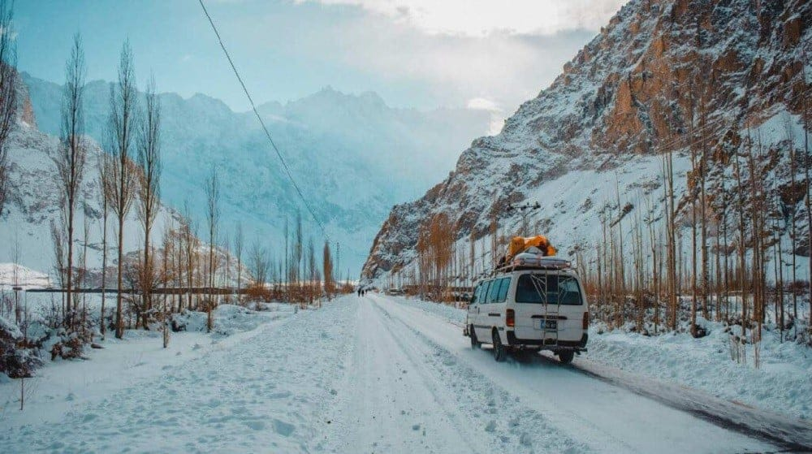
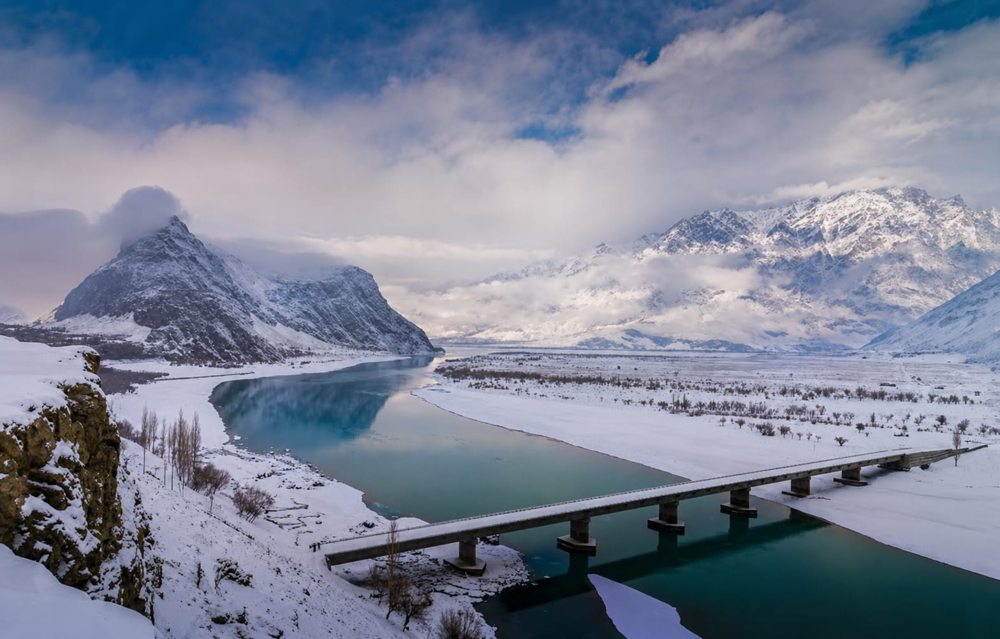
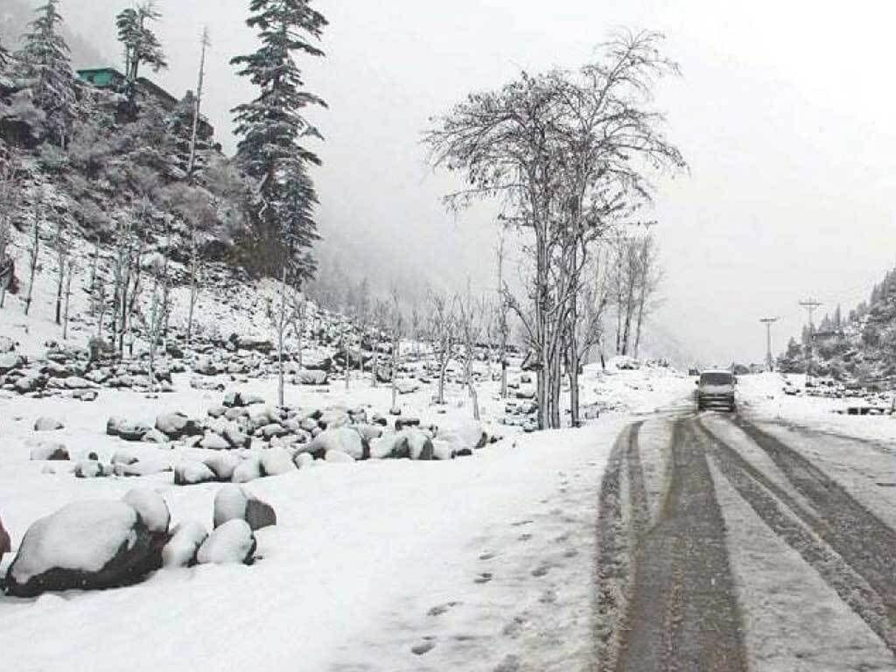
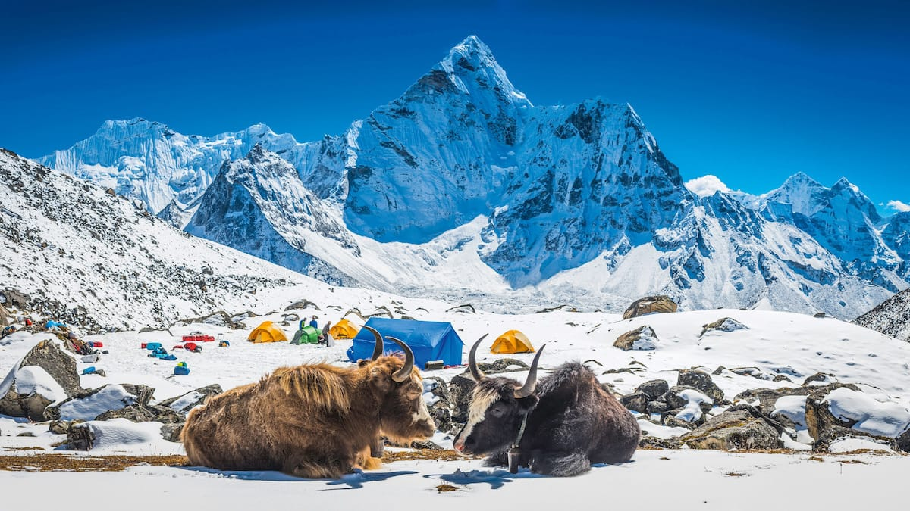

❄ WINTER IN PAKISTAN
WINTER
WONDERLAND
Discover snow-covered mountains, peaceful valleys and unforgettable winter adventures across Pakistan.

DISCOVER PAKISTAN
❄ WINTER IN PAKISTAN
Discover snow-covered mountains, peaceful valleys and unforgettable winter adventures across Pakistan.
WINTER ADVENTURES
Winter transforms many parts of Pakistan into spectacular snowy landscapes. From the peaceful streets of Murree to the dramatic mountains of Gilgit-Baltistan, winter offers a completely different way to experience the country.
If you love snow, mountains, photography and cozy winter escapes, this is the season for your next adventure.

Murree becomes a beautiful winter escape when snow covers its hills, trees and streets.
Visit for snowfall, mountain views, cozy evenings and a memorable winter getaway.

Hunza becomes peaceful and dramatic during winter. Snow-covered mountains surround the valley and create breathtaking views.
Experience snowy landscapes, quiet villages, spectacular mountain views and a peaceful winter atmosphere.

Skardu's mountains and valleys become even more dramatic when winter arrives. Snow creates a magical contrast against the massive mountain peaks.
Perfect for mountain lovers, photographers and travellers looking for spectacular snowy scenery.

Kalam becomes a winter wonderland surrounded by snow-covered forests, mountains and peaceful valleys.
Go for snowfall, snowy forests, beautiful mountain scenery and an unforgettable winter escape.

The land of spectacular snowy mountains, dramatic valleys and unforgettable winter scenery.
Experience dramatic peaks, snowy landscapes and the raw beauty of northern Pakistan.
THE GREAT MOUNTAINS

Discover towering peaks and spectacular winter landscapes in the Himalayan region.

A legendary mountain range surrounded by some of the world's most dramatic peaks.
WINTER TRAVEL TIPS
Pack warm layers, jackets, gloves and comfortable shoes for cold mountain weather.
Snow can affect mountain roads, so always check conditions before travelling.
Take your camera, enjoy the scenery and make unforgettable winter memories.